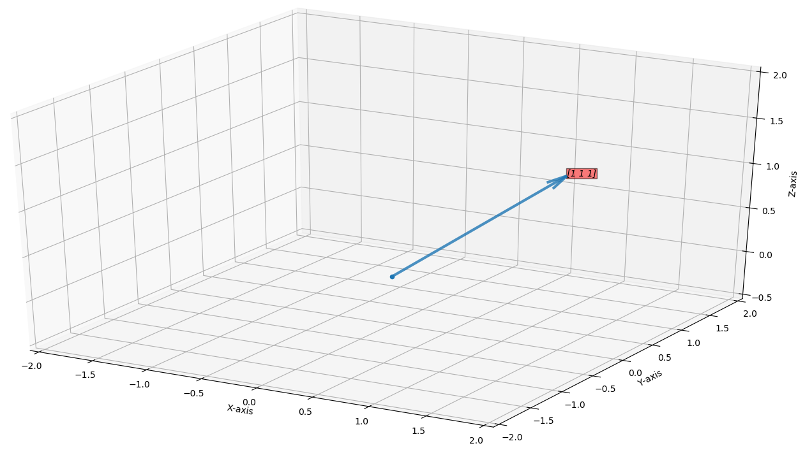
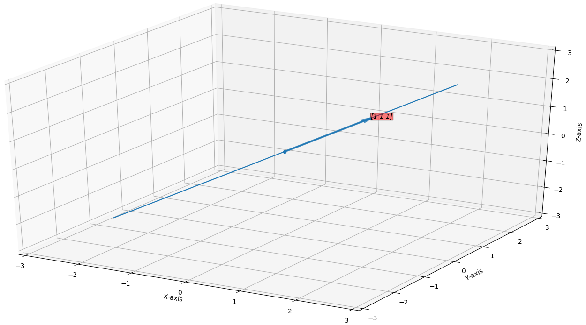
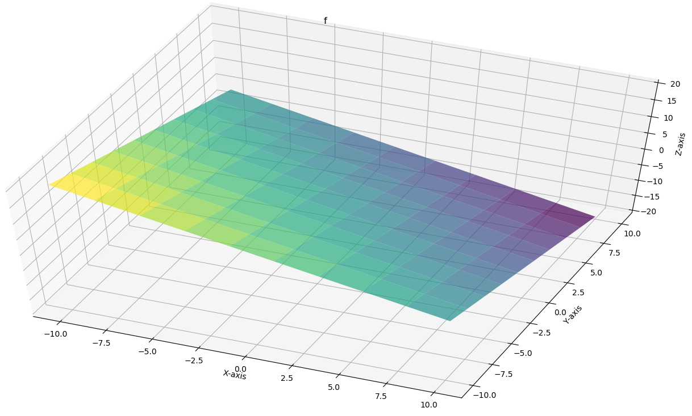
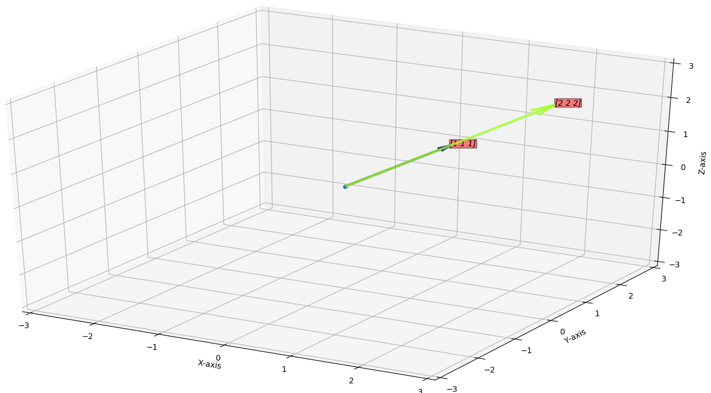
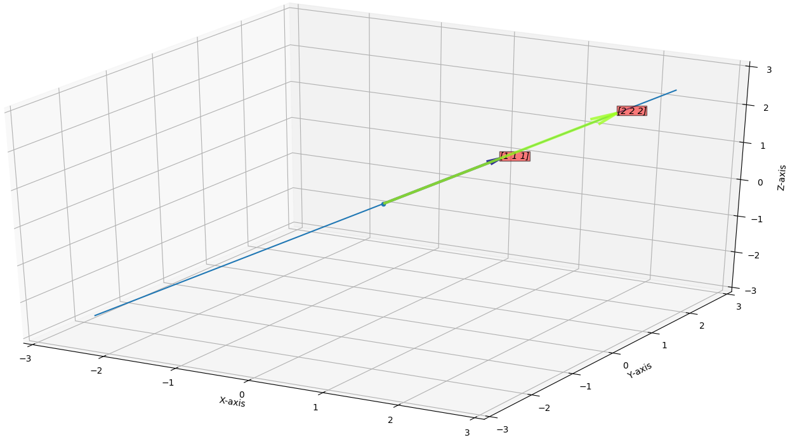
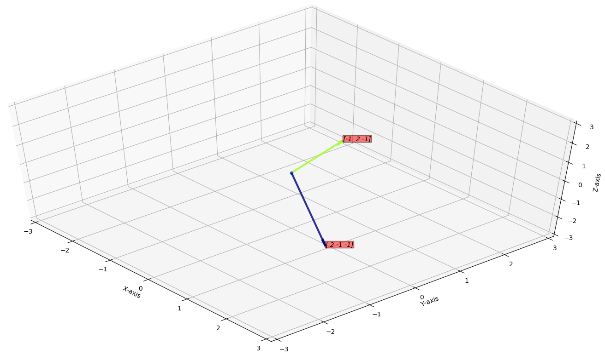
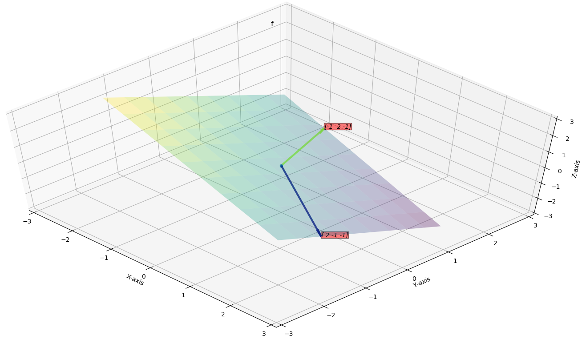
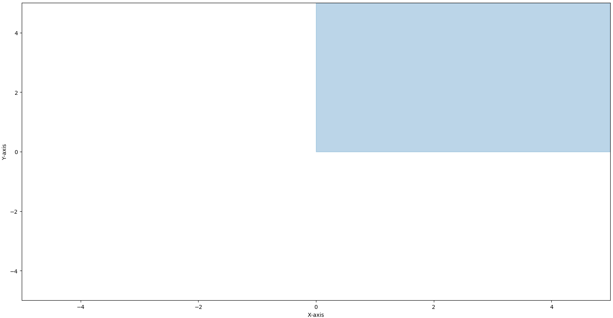
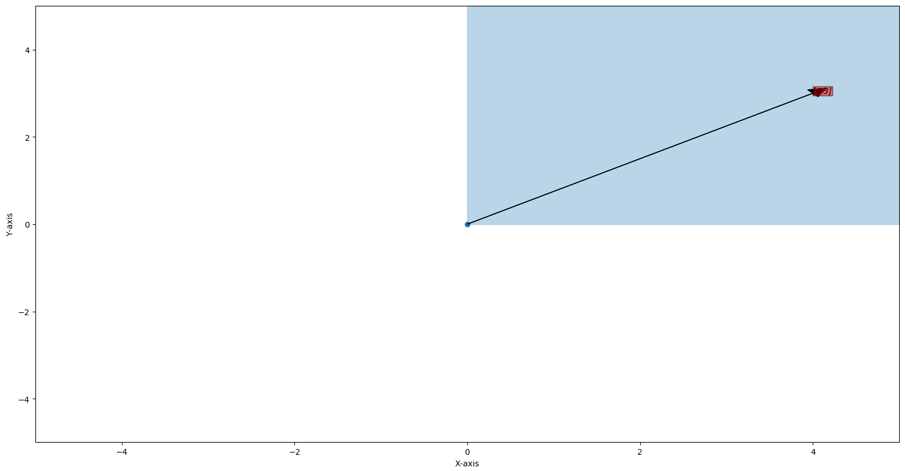
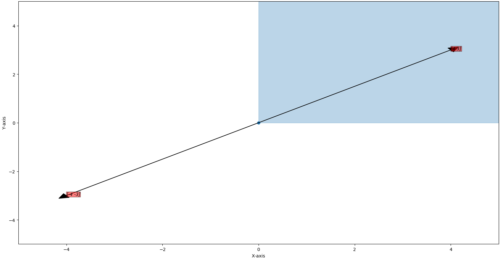

Vector space
Consider a vector \(\vec{v}\in\mathbb{R}^d\), here \(\vec{v}\) lives in \(d\) dimensional space this space is a vector space.For example for \(d=3\),

Code To plot this vector (python)
import MultiVariable as mvar import numpy as np %matplotlib qt m = mvar.MultiVariable() vector = np.array([[1,1,1]]) m.plot_3D_vectors(vector) ## Adjusting axis limits m.set_axes_limit((-2,2)) m.setZ_limit((-0.5,2))
If we multiply a vector \(\vec{v}\) by a constant say \(c\) then the resulting vector is in direction of \(\vec{v}\) (or in opposite direction).
Say the resulting vector is \(\vec{v}'\) then we can say \(\vec{v}' = c \vec{v} \) where \(c\in\mathbb{R}\), it is a line along vector \(\vec{v}\).
Here you can see that \(\vec{v}'\) has it's own space inside that \(d\) dimensional space, it's a vector space inside a vector space.
Example for \(d=3\)

Code To plot this vector (python)
import MultiVariable as mvar import numpy as np %matplotlib qt m = mvar.MultiVariable() ## Here line is defines as [x-start, x-end, y-start, y-end, z-start, z-end] lines = np.array([[-2,2,-2,2,-2,2]]) m.plot_3D_lines(lines) vector = np.array([[1,1,1]]) m.plot_3D_vectors(vector, plot_separately=False) ## Adjusting axis limits m.set_axes_limit((-3,3))
Now Consider a plane(passing through origin) inside a \(3\)-dimensional space, so that plane lives inside \(3\)-dimensional vector space, but it has it's own vector space.

Code To plot this plane (python)
import MultiVariable as mvar
import numpy as np
%matplotlib qt
def f(x,y):
return -x -y
m = mvar.MultiVariable()
m.plot_surface_color_3D(f, plot_separately=True, alpha=0.7)
If we add any two \(d\)-dimensional vectors, we get a \(d\)-dimensional vector as a output.
Say we have two vectors \(\vec{v}\in\mathbb{R}^d\) and \(\vec{w}\in\mathbb{R}^d\), then if we take there linear combination, then that linear combination will have it's own vector space, but what that vector space looks like?
Well it depends, on how \(\vec{v}\) and \(\vec{w}\) are oriented.
Case 1: if \(\vec{v}\) is parallel to \(\vec{w}\)
If \(\vec{v}\) and \(\vec{w}\) are parallel then \(\vec{w}= c \vec{v};\quad c\in\mathbb{R}\), So vector space is just a line.
Example for \(d=3\):
Say the vectors are \(\vec{v} = \begin{bmatrix} 1 \\ 1\\ 1\\ \end{bmatrix}\) and \(\vec{w} = \begin{bmatrix} 2 \\ 2\\ 2\\ \end{bmatrix}\)

Then the vector space is just a line passing through these vectors.

Code To plot this (python)
import MultiVariable as mvar
import numpy as np
%matplotlib qt
m = mvar.MultiVariable()
vectors = np.array([
[1,1,1],
[2,2,2]
])
origin = np.array([0,0,0])
m.plot_3D_vectors(vectors, origin, plot_separately=False)
# Structure of lines = [[x-start, x-end, y-start, y-end, z-start, z-end],...]
lines = np.array([[-2.5,2.5,-2.5,2.5,-2.5,2.5]])
m.plot_3D_lines(lines, plot_separately=False)
m.set_axes_limit((-3,3))
Case 2: if \(\vec{v}\) is not parallel to \(\vec{w}\)
If \(\vec{v}\) and \(\vec{w}\) are not parallel then the vector space of linear combination of \(\vec{v}\) and \(\vec{w}\) is a plane.
Example for \(d=3\):
Say the vectors are \(\vec{v} = \begin{bmatrix} 2 \\ -1\\ -1\\ \end{bmatrix}\) and \(\vec{w} = \begin{bmatrix} -1 \\ 2\\ -1\\ \end{bmatrix}\)

Then the vector space is the plane passing through these vectors.

Code To plot this (python)
import MultiVariable as mvar
import numpy as np
%matplotlib qt
# X + Y + Z = 0
def f(x,y):
return -x -y
m = mvar.MultiVariable(count = 10, x_range=(-2,2), y_range=(-2,2), z_range=(-2,2))
vectors = np.array([
[2,-1,-1],
[-1,2,-1]
])
origin = np.array([0,0,0])
m.plot_3D_vectors(vectors, origin, plot_separately=False)
m.plot_surface_lines_3d(f, density = 100, plot_separately=False)
m.set_axes_limit((-3,3))
Vector Space Properties
So when can we say that a space can be a vector space?A space is a vector space if it full fill these conditions:
- If there is a vector in that space and we multiply that vector with a constant \(c\in\mathbb{R}\) then the resulting vector must be in the space
- Say we took two vectors \(\vec{v}\) and \(\vec{w}\) then there sum must be in that space.
Think of a 2 dimensional space where \(x\gt0\) and \(y\gt0\)

We can add vector safely and we don't go out of the space.
What about multiplying a constant to a vector, take a vector in that space \(\vec{v}=\begin{bmatrix} 4 \\ 3\\ \end{bmatrix}\).

if we multiply \(\vec{v}\) by \(-1\) then if goes out of space.

Code To plot this (python)
import MultiVariable as mvar
import numpy as np
%matplotlib qt
m = mvar.MultiVariable()
x = np.array([0, 5])
y1 = np.array([5,5])
y2 = np.array([0, 0])
m.fill_between(x, y1, y2, alpha=0.3)
vectors = np.array([
[4,3],
[-4,-3],
])
origin = np.array([0,0])
m.plot_2D_vectors(vectors, origin, plot_separately=False, head_width=0.2, head_length=0.2)
m.set_axes_limit((-5,5))
A vector space must pass through the origin.
Vector space inside a vector space is referred as a subspace.
Possible subspace of a \(2\)-dimensional space.
- All \(\mathbb{R}^2\) space
- All lines passing through origin.
- Origin itself(\(\vec{0}\))